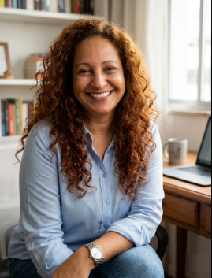

Tecnologia | Gestão Cultural | Criadora de Conteúdo
Manutenção técnica de notebooks (Lenovo, Sony, Positivo). Upgrade de SSD e RAM, limpeza interna e otimização de sistemas.
Coordenadora e Produtora Cultural no Projeto Clubinho do Guaraná. Experiência em liderança social e gestão de projetos.
• Excel Avançado
• Inteligência Artificial Generativa
Gestão de canais no YouTube (Urubu Fêmea, Pets, Receitas). Edição profissional em CapCut e Movavi.